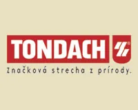

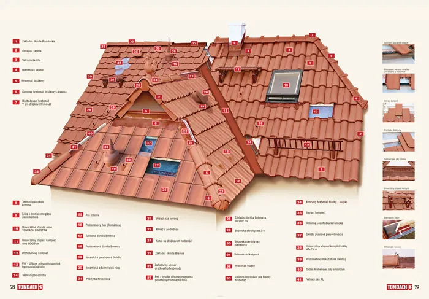
Výhody palenej krytiny
Strecha, pod ktorou ste v bezpečí
Extrémna odolnosť keramickej strešnej krytiny a jej špeciálnych povrchových úprav chráni vášu strechu i váš domov pred najtvrdšími poveternostnými vplyvmi.
Dôkazom odolnosti keramického materiálu je jej prienik do automobilizmu (keramické obloženie bŕzd) alebo do kozmického priemyslu ako vonkajšie obloženie raketoplánov.
Jedna škridla unesie viac, ako si myslíte
Výber suroviny a technologicky náročný spôsob spracovania garantujú špičkovú mechanickú pevnosť voči náporom vetra či zaťaženiu snehom, pri optimálnej hmotnosti a hrúbke krytiny.
Dôkazom je skúškami overená únosnosť jednej škridly Jirčanka, ktorá je o viac ako 20% vyššia ako u porovnateľný betónových krytín. Unesie viac ako 320 kg!
Pokojný a zdravý život pod vlastnou strechou
Výhradne prírodné materiály a prísny systém kontroly zaručujú 100 % zdravotnú nezávadnosť. Preto sú systémy Tondach vhodné aj pre alergikov a astmatikov.
Toto tvrdenie dokazuje i získanie prestížneho certifikátu pre stavebné materiály - NaturePlus, ktorý koncern Tondach získal ako jediný výrobca strešných krytín v celej Európe.
A voda rýchlo odteká
Premyslený dvojitý drážkový systém zabezpečuje rýchly odvod vody a pomáha chrániť objekt pred vlhkosťou a prachom.
Žiadna so strešných krytín sa nemôže pochváliť dvojitýcm drážkovým systémom. Jeho vytvorenie umožňuje iba tvárnosť ílu a moderná výrobná technológia, ktorou Tondach disponuje vo všetkých svojich výrobných závodoch.
Čistá po celý život
Mimoriadne hladký povrch pálených škridiel redukuje usadzovanie nečistôt, machov, sadzí a prachu.
Strecha, ktorá sa dedí
Precízne spracovanie na vysokej remeselnej úrovni vytvára trvácnu krytinu so životnosťou minimálne 80 až 100 rokov bez akejkoľvek údržby.
Dokonalý izolant
Hĺbka a členitosť reliéfu spoločne s povrchovou úpravou sa podieľajú na odrazivosti slnečného tepelného žiarenia a tak chránia váš domov pred prehriatím.
Navždy najkrajšia strecha v okolí
Kvalitné prírodné pigmenty a náročná technika vypaľovania garantujú nemennosť a bezkonkurenčnú farebnú stálosť prírodných i povrchovo upravených pálených škridiel
Investíciou do kvality ušetríte peniaze
Pálená krytina nepotrebuje žiadne dodatočné ošetrovanie, žiadne nátery, farebenie ani čistenie. A tak šetrí vaše peniaze, čas i vás.
Pridaná hodnota
Pálená krytina má znovupredajnú hodnotu a tak zvyšuje cenu každého objektu. Je ľahko recyklovateľná a mnohé modely je možné kombinovať, starú krytinu s novou. V zime napomáha znižovať náklady na kúrenie.
Príjemný domov pre všetkých
Keramický črep aktívne dýcha a prepúšťa paru, pričom je nepresiakavý. Tým prispieva k lepšiemu vysúšaniu strešného systému a sprostredkúva pocit tepla a príjemnej klímy.
Ochráni vás i váš domov
Svojím zložením, spracovaním a výpalom pri vysokých teplotách sa pálená krytina stáva dokonale ohňuvzdornou a nehorľavou.
Na kopcoch i v dolinách
Pálená škridla Tondach je dokonale mrazuvzdorná bez ohľadu na jej nasiakavosť. Môžete sa na ňu spoľahnúť na celom území Slovenska a vo všetkých nadmorských výškach.
Prečo sa rozhodnúť pre TONDACH?
Strecha, na ktorú sa môžete spoľahnúť
Tondach, okrem reprezentatívnosti a moderného imidžu, kladie dôraz predovšetkým na kvalitu a funkčnosť. Za každých okolností sa môžete spoľahnúť na vysokú kvalitu, extrémnu odolnosť voči poveternostným vplyvom, špičkovú mechanickú pevnosť, vynikajúce izolačné vlastnosti a 100-percentnú zdravotnú nezávadnosť.
33-ročná záruka
Poskytujeme najdlhšiu a najkomplexnejšiu záruku na trhu, pretože výrobky Tondach nielen spĺňajú ale často aj prevyšujú prísne slovenské a európske normy. Dôkazom sú milióny spokojných zákazníkov v celej Európe.
Kompletný premyslený systém
Okrem základných škridiel ponúka Tondach i kompletné keramické a nekeramické príslušenstvo., ktoré zabezpečujú maximálnu funkčnosť strešného systému. Na rozdiel od iných výrobcov, kladie Tondach dôraz na kvalitu všetkých strešných doplnkov. Výhodou keramického príslušenstva oproti plastovým doplnom je v jeho odolnosti a stálofarebnosti, nekeramické príslušenstvo je výhradne z ušľachntilých kovov.
Najväčší výrobca pálených škridiel v strednej Európe
Koncern Tondach pôsobí v 11 krajínach a svoje produkty vyrába v 34 výrobných závodoch. Dlhá tradícia výroby, stála modernizácia a investície do rozvoja a zdokonaľovania zaručujú, splnenie vysokých očakávaní všetkých našich zákazníkov dnes aj v ďalekej budúcnosti
Zdravie na prvom mieste
Ako jediný výrobca strešných materiálov Tondach získal špeciálny európsky certifikát pre stavebné materiály NaturePlus, ktorý potvrdzuje neškodnosť výrobkov a samotného výrobného procesu pre zdravie a životné prostredie.
Najširší sortiment na Slovensku
Systém Tondach uspokojí i najnáročnejšieho zákazníka – základné škridly sú dostupné vo viac ako 200 kombináciách tvarov, farieb a povrchových úprav. Široký sortiment ponúka možnosti doslovne šité na mieru. Výrobky vhodné na rekonštrukcie staršej strechy i výrobky rešpektujúce modernú architektúru a nároky novostavieb.
Myslíme do budúcnosti
Ako jediný z predajcov strešných systémov na Slovensku, ponúkame vysokokvalitné solárne zostavy TONDACH SOLAR na ohrev úžitokovej pitnej vody a tým šetríme vaše budúce výdavky.
Jedinečnosť povrchových úprav Tondach
Atraktívny vzhľad, vysoká kvalita, trvalá a nemenná krása — to sú engoby a glazúry Tondach
Engoby a glazúry Tondach sú viac ako farby. Od ostatných povrchových úprav sa odlišujú svojou odolnosťou a trvácnosťou. Nevznikajú nanesením či primiešaním farby, ale výpalom pri teplotách nad 1000°C. Rôzne odtiene sa dosahujú použitím rôznych oxidov a rozplaveného ílu. Táto zmes sa nanáša na vysušenú škridlu a takto upravený výrobok sa následne vypaľuje. V peci povrchová úprava slinie s keramickým črepom a tak vznikne farebne stála matná, pololesklá alebo lesklá vrstva, zatavená hlboko do každej škridly.
Prednosti engob a glazúr
Kvalitatívne vylepšenie škridly
Svojím zložením a výpalom zvyšujú pevnosť, mrazuvzdornosť a odolnosť keramickej krytiny, čím predlžujú jej životnosť.
Navždy najkrajšia strecha v okolí
Výpalom pri vysokých teplotách sa stabilizuje ich odtieň a tak vaša strecha zostane navždy rovnako krásna.
Extrémna odolnosť
Perfektne odolávajú meniacim sa poveternostným vplyvom a extrémnym vplyvom počasia, ako napríklad krupobitie. Ich štruktúru nenaruší kyslý dážď ani vtáčí trus.
Žiarivo čistá strecha
Sklovitý povrch glazúr a hladký povrch engob minimalizuje usádzanie nečistôt, sadzí i machu.
Najhospodárnejšie riešenie každej strechy
Šetria peniaze a čas majiteľa, pretože na rozdiel od iných povrchových úprav nepotrebujú žiadne dodatočné ošetrovanie, farbenie, čistenie ani nátery.
Zamatovo hebká strecha
Matná a pololesklá povrchová úprava sa nazýva engoba. Prednosťou tejto povrchovej úpravy je jej priedušnosť. Engobovaná krytina dýcha a vytvára pocit príjemnej klímy a pritom je nepresiakavá. Hladký povrch minimalizuje usádzanie nečistôt, sadze i vtáčieho trusu.
Strecha s nádychom luxusu
Glazúra je najvyšším stupňom úpravy povrchu pálenej krytiny. Nielenže výrobok zušľachťuje, ale ho i spevňuje a chráni. Glazúrou sa škridla stáva lesklou a sklovitý povrch zabraňuje akémukoľvek usadeniu nečistôt, machov a rias.


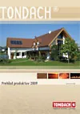
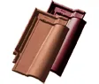
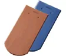
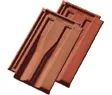
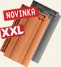
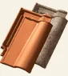
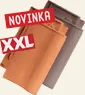
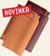
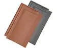
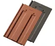
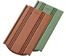
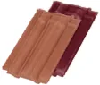